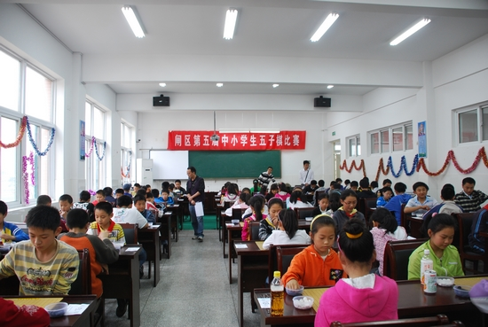
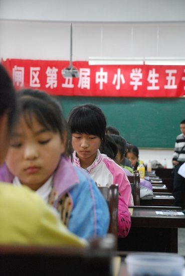
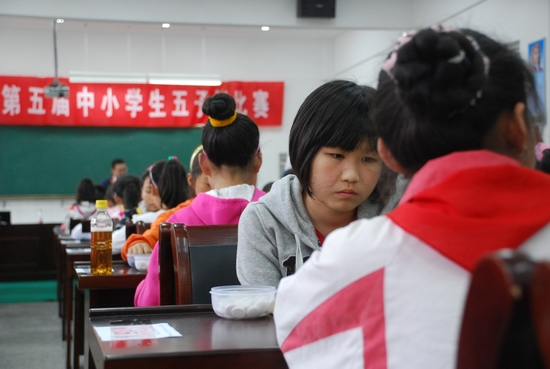
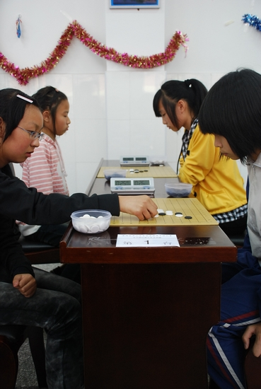

为期一天半的南通市港闸区第五届中小学生五子棋比赛于2011年5月27日上午结束，此次比赛共计有58名少年选手、78名儿童选手及24名幼儿选手参加。
最终，邓伟、胡伏生、周新鑫分获少年男子组前三名；褚圣楠、周鑫雨、陈楠钰分获少年女子组前三名；黄英男、郭钒逸、马俊达分获儿童男子组前三名；朱悦、石玉、戴天一分获儿童女子组前三名；傅麟杰、陈抱朴、黄润玉分获幼儿组前三名。少年组团体前三分别是北城中学、越江中学、陈桥中学；儿童组团体前三分别是：唐闸小学、港闸区实验小学、天生港学校。





 小朋友们继续努力~~~~~未来的希望啊~~~~~
小朋友们继续努力~~~~~未来的希望啊~~~~~我被拍到一个模糊的身影！